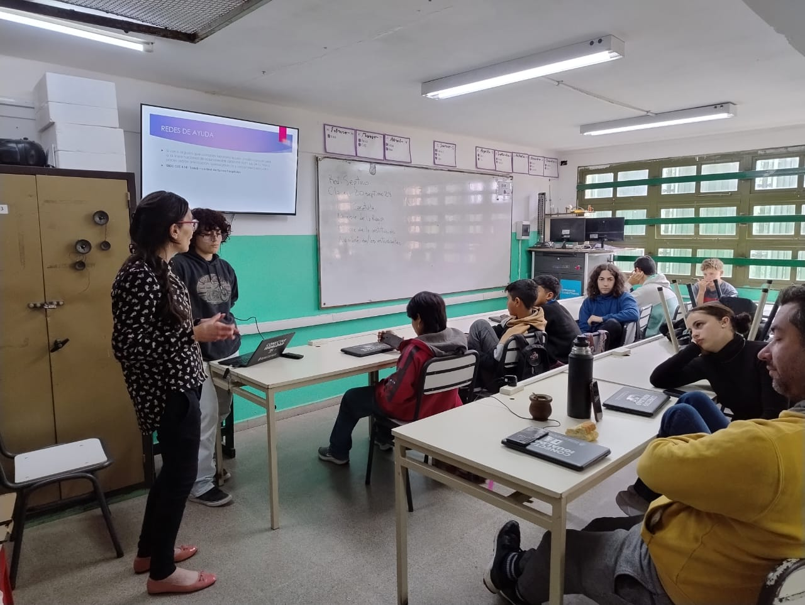
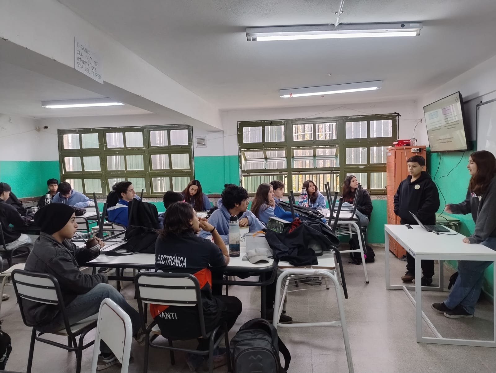

Este proyecto está apoyado por la Lic. en Psicología Mara López Blanco. Llevamos a cada curso del colegio charlas sobre trastornos de la conducta alimentaria (TCA), bullying y ansiedad. También dejamos papeles para que los alumnos los completen de forma anónima, con el fin de comprender mejor sus inquietudes. Además, estamos desarrollando un trabajo de investigación para planificar futuras charlas sobre más temas vinculados al bienestar emocional y la salud mental en la comunidad educativa.



